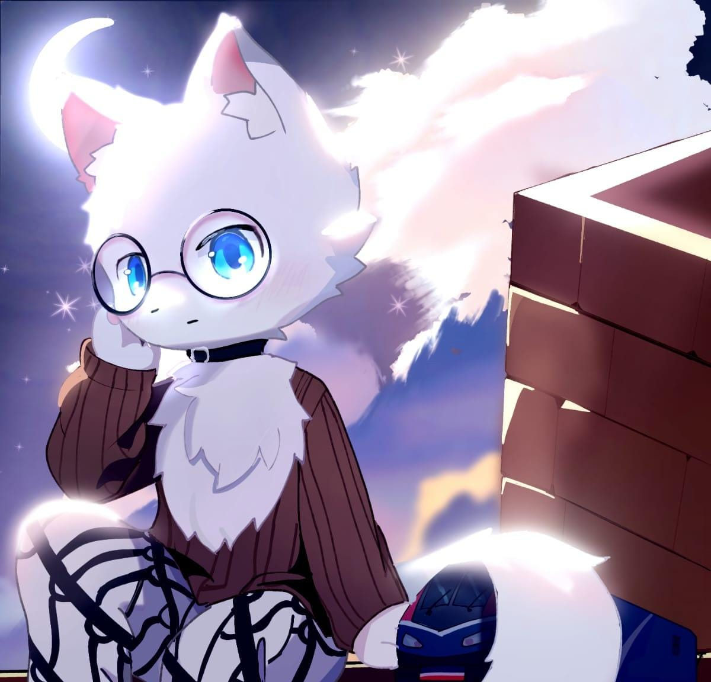
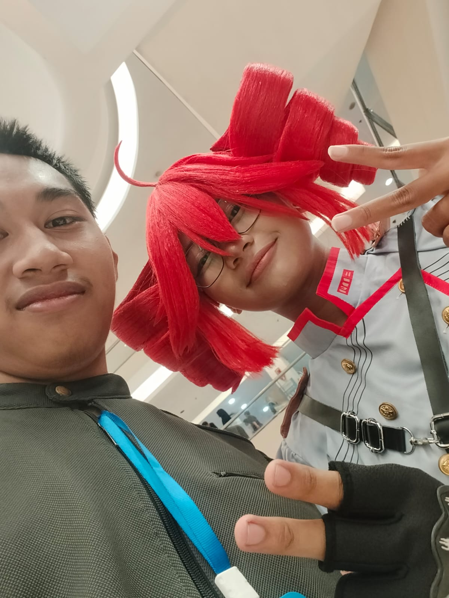

Rabaam
✦ Roblox OC · Jiwa Virtual · Teman Bagi Semua ✦
"Hanya karakter virtual yang menciptakan kenangan nyata bersama orang-orang terbaik."
.png)
Hai, Aku Rabaam
Inilah bio ku sendiri, terinspirasi dari rasa malas sendiri untuk memperkenalkan diri serta menceritakan pengalamanku.
Gk banyak hal yang bisa ku terangkan disini karena baik di dunia online ataupun offline saya tetap sulit untuk menjelaskan.
Rabaam
✦ Pemilik Semua Ini
Ini aku. Di balik semua teman, kenangan, dan galeri yang kamu lihat di sini — ada satu karakter yang menghubungkan semuanya. Ya, Rabaam.
Nama yang lahir dari gabungan nama, yang awalnya cuma nickname Roblox, lalu tumbuh jadi sesuatu yang lebih — OC ku sendiri, jiwa virtual yang menciptakan kenangan nyata. Sulit dijelaskan, tapi itulah aku.
AWAL TERCIPTANYA
Nama Rabaam sendiri tercipta karena kepikiran aja sendiri, aslinya gabungan nama asliku dan temenku (Ra : Namaku, Ba : nama teman desa, dan Am : nama teman desa juga).
awalnya nama rabaam hanya akan digunakan untuk nickname roblox saja akan tetapi karena berjalannya waktu dan malas mencari nama lain akhirnya ku putuskan rabaam sebagai nama OC ku sendiri.
Teman-temanku
Orang-orang yang membuat dunia virtual terasa seperti rumah.

Renny
🥵 Teman yang Tenang
Introvert, takut kehilangan orang yang dipercaya, tapi ekstrovert dan mudah akrab jika kamu sudah mengenalnya dengan baik.
Tapi menurutku... meh, bagiku dia adalah teman yang baik, dan aku bisa mempercayainya. Dia orang yang baik, dan aku senang memilikinya sebagai temanku.
🔗 Instagram Renny
siven
🎨 Jiwa Kreatif
Siven membawa energi kreatif — render yang keren, vibes yang asik, dan teman yang menyenangkan di lobby. Salah satu anggota inti dari squad.
.jpeg)
Argi
😂 Si Pelawak
Santai, seru, mudah bergaul, suka melontarkan lelucon — tipe orang yang menjaga suasana tetap ringan dan tawa terus berlanjut. Tidak pernah ada momen membosankan dengan Argi di sekitar.
🔗 Instagram Argi
Yukky
🚂 Penggemar Kereta yang Penasaran
Autis, sangat penasaran, dan berhati baik — meski kadang sedikit aneh. Dan yang terpenting, seorang penggemar kereta sejati, selalu siap berbagi hasratnya dan mendalami apa pun yang menarik minatnya. Jiwa yang hangat dan tulus yang membuat setiap percakapan menarik, juga seorang loremaker.
🔗 Instagram Yukky
Ryko (Fboy)
😎 Teman yang Santai
kadang bisa menjadi bodoh, ceria, dia bisa meredakan situasi atau membuat kekacauan semakin parah.
🔗 Instagram Ryko
Azernits (Fboy + G)
😎 Pelawak Kompetitif
Pelawak sejati, kompetitif, femboy, ceria — dan sering mengucapkan omong kosong kapan saja. Tidak pernah ada momen sepi dengan Azernits di sekitar.
🔗 Instagram Azernits
Udin
🕳️ Pembawa Suasana
Suka membuat ide-ide random, mencairkan suasana, bersenang-senang — selalu membawa energi segar dan membuat segalanya menarik. Master of good times.
🔗 Instagram Udin
Nighty
📚 Otak yang Ceria
Ceria dan kadang sedikit mengganggu — tapi dengan cara yang menyenangkan sehingga kamu tidak bisa menahan tawa. Selalu penasaran, selalu belajar hal baru, selalu mengumpulkan pengetahuan random untuk dilemparkan ke dalam percakapan. Dan ada juga sisi konyol dan tak masuk akal yang membuat semua orang menebak apakah dia serius atau hanya bercanda. Tidak pernah membosankan, tidak pernah bisa ditebak.
🔗 Instagram Nighty.jpeg)
SomeWhiteFox
🥊 Kompetitor yang Tenang
Santai dan tenang secara alami, dengan kehadiran ramah yang membuat lobby terasa nyaman. Tapi jangan tertipu dengan sikap santai itu — saat waktunya berkompetisi, saklar berubah dan dia membawa permainan terbaiknya. Keseimbangan sempurna antara vibes santai dan semangat kompetitif.
🔗 Instagram SomeWhiteFox
Purpurh
🌸 Si Aneh yang Lembut
Berbicara lembut dan tenang — tipe orang yang kehadirannya yang tenang membuat percakapan terasa aman dan hangat. Tapi jangan tertipu dengan penampilan lembut itu: mereka punya sisi seru dan aneh yang membuat setiap momen menjadi mengasyikkan. Bukan dengan cara yang aneh, tapi dengan cara terbaik — selalu menyenangkan untuk diajak bermain, selalu asyik untuk diajak bicara. Perpaduan sempurna antara ketenangan yang nyaman dan keseruan yang kacau.
.jpg)
Fajar
😎 Teman yang Santai
Ceria, santai, dan ramah — tipe orang yang membawa vibes positif ke mana pun mereka pergi. Selalu mudah diajak bicara, selalu siap untuk tertawa. Teman yang solid untuk dimiliki di lobby mana pun.
.jpeg)
Maren (Telur)
🤣 Paradoks yang Ceria
Absurd tapi lucu, sabar, sedikit nakal — kontradiksi berjalan antara kekacauan dan ketenangan.
🔗 Instagram Maren.jpeg)
Emir
😏 Ketenangan yang Nakal
Suka membuat masalah — selalu menemukan cara untuk mengaduk sedikit kekacauan, entah itu melontarkan lelucon di saat yang paling tidak tepat atau memulai ulah random di lobby. Tapi terlepas dari kenakalannya, ada kalanya Emir tenang secara mengejutkan, beralih menjadi kehadiran yang santai dan mudah bergaul. Dan di semua itu, dia benar-benar menyenangkan untuk diajak bicara — tipe orang yang bisa kamu ajak bercanda selama berjam-jam tanpa pernah bosan.
.jpg)
Azura
💀 Mimpi Buruk yang Sempurna
Kebanyakan sadis, suka gore, penyiksa, bukan manusia, dan.... Penampilan sempurna? Makhluk yang penuh kontradiksi — menakutkan namun memukau, kejam namun indah. Kamu tidak bisa mengalihkan pandangan, bahkan jika seharusnya begitu.
.jpg)
Colin
🤔 Senyum yang Misterius
Ceria, baik hati, susah ditebak — selalu tersenyum, tapi kamu tidak pernah tahu apa yang ada di baliknya. Misteri itulah bagian dari pesonanya.
Galeri Kami
Setiap gambar menyimpan sebuah cerita. Inilah cerita-cerita kami.

.jpeg)


